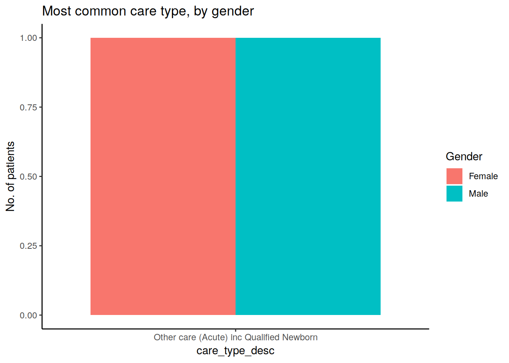
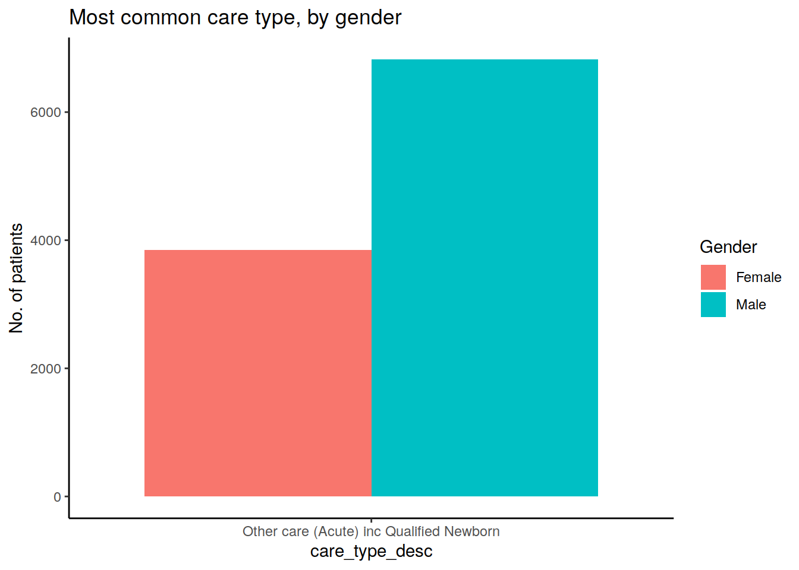

Last updated: 2019-05-27
Checks: 5 1
Knit directory: tutorials_workflowr/
This reproducible R Markdown analysis was created with workflowr (version 1.3.0.9000). The Checks tab describes the reproducibility checks that were applied when the results were created. The Past versions tab lists the development history.
Great! Since the R Markdown file has been committed to the Git repository, you know the exact version of the code that produced these results.
Great job! The global environment was empty. Objects defined in the global environment can affect the analysis in your R Markdown file in unknown ways. For reproduciblity it’s best to always run the code in an empty environment.
The command set.seed(20190513) was run prior to running the code in the R Markdown file. Setting a seed ensures that any results that rely on randomness, e.g. subsampling or permutations, are reproducible.
Nice! There were no cached chunks for this analysis, so you can be confident that you successfully produced the results during this run.
Great! You are using Git for version control. Tracking code development and connecting the code version to the results is critical for reproducibility. The version displayed above was the version of the Git repository at the time these results were generated.
Note that you need to be careful to ensure that all relevant files for the analysis have been committed to Git prior to generating the results (you can use wflow_publish or wflow_git_commit). workflowr only checks the R Markdown file, but you know if there are other scripts or data files that it depends on. Below is the status of the Git repository when the results were generated:
Unstaged changes:
Deleted: code/analysis/Anthea_question_1.Rmd
Note that any generated files, e.g. HTML, png, CSS, etc., are not included in this status report because it is ok for generated content to have uncommitted changes.
These are the previous versions of the R Markdown and HTML files. If you’ve configured a remote Git repository (see ?wflow_git_remote), click on the hyperlinks in the table below to view them.
| File | Version | Author | Date | Message |
|---|---|---|---|---|
| Rmd | bfc7bc3 | Dennis Wollersheim | 2019-05-27 | wflow_publish(“analysis/Anthea_question_1.Rmd”) |
library(tidyverse)
cardiac_diagnosis = read_csv("cardiac_diagnosis.csv") Hi Dennis
I am trying to attempt the following question:
For the most frequent care type, what is the gender breakdown of patients?
I tried to select everything then filter by the most common care type, so I conjure the following:
cardiac_diagnosis %>%
distinct(admission_id, care_type_desc, sex_desc) %>%
filter(
count(care_type_desc, sort=TRUE) %>%
head(1)
)It made no sense in R…. of course. The following is the error message:
Error in UseMethod(“groups”) : no applicable method for ‘groups’ applied to an object of class “character”
So I cheated by doing this:
cardiac_diagnosis %>%
count(care_type_desc, sex_desc, sort=TRUE) %>%
head(2)# A tibble: 2 x 3
care_type_desc sex_desc n
<chr> <chr> <int>
1 Other care (Acute) inc Qualified Newborn Male 6861
2 Other care (Acute) inc Qualified Newborn Female 3875But when I plot it, using the following command:
cardiac_diagnosis %>%
count(care_type_desc, sex_desc, sort=TRUE) %>%
head(2) %>%
ggplot()+
geom_bar(mapping=aes(x=care_type_desc,fill=sex_desc), position="dodge")+
labs(title="Most common care type, by gender", y="No. of patients")+
scale_fill_discrete(name='Gender')+
theme_classic()
I think I am missing something here.
Is it ok if you can point me to the right direction?
Many thanks
I am overjoyed to point you in the right direction! Thanks so much for the question. Response below
This is a great first attempt, trying to use the filter to filter out the rows having the most frequent care_type_desc.
cardiac_diagnosis %>%
distinct(admission_id, care_type_desc, sex_desc) %>%
filter(
count(care_type_desc, sort=TRUE) %>%
head(1)
)And as you pointed out, it doesn’t work. Technically, this is because filter expects a boolean condition, something that returns TRUE or FALSE, usually of the form x=y. If your filter is in that form, it could actually work. For example, if you knew what your most frequent care type was, for, by example, running this:
cardiac_diagnosis %>%
distinct(admission_id, care_type_desc, sex_desc) %>%
count(care_type_desc, sort=TRUE) %>%
head(1) %>%
select( care_type_desc )# A tibble: 1 x 1
care_type_desc
<chr>
1 Other care (Acute) inc Qualified NewbornWe would find that the most frequent care type was Other care (Acute) inc Qualified Newborn. So, we could actually filter by that:
cardiac_diagnosis %>%
distinct(admission_id, care_type_desc, sex_desc) %>%
filter( care_type_desc == 'Other care (Acute) inc Qualified Newborn' )# A tibble: 10,669 x 3
admission_id care_type_desc sex_desc
<dbl> <chr> <chr>
1 21000156 Other care (Acute) inc Qualified Newborn Female
2 21000190 Other care (Acute) inc Qualified Newborn Female
3 21000320 Other care (Acute) inc Qualified Newborn Male
4 21000421 Other care (Acute) inc Qualified Newborn Male
5 21001608 Other care (Acute) inc Qualified Newborn Male
6 21001622 Other care (Acute) inc Qualified Newborn Female
7 21001661 Other care (Acute) inc Qualified Newborn Male
8 21001835 Other care (Acute) inc Qualified Newborn Male
9 21001981 Other care (Acute) inc Qualified Newborn Male
10 21002022 Other care (Acute) inc Qualified Newborn Female
# … with 10,659 more rowsThis could then be piped into ggplot, to answer your question.
cardiac_diagnosis %>%
distinct(admission_id, care_type_desc, sex_desc) %>%
filter( care_type_desc == 'Other care (Acute) inc Qualified Newborn' ) %>%
ggplot()+
geom_bar(mapping=aes(x=care_type_desc,fill=sex_desc), position="dodge")+
labs(title="Most common care type, by gender", y="No. of patients")+
scale_fill_discrete(name='Gender')+
theme_classic() I can tell that you already know all this! It is just that you want to do it automatically, without human intervention. So do I. I show you this because I want to demonstrate 1) filter is not wrong, and 2) later, I will show you how to do it with filter. It is just that the filter approach is a bit complex.
Your second attempt was as follows:
cardiac_diagnosis %>%
count(care_type_desc, sex_desc, sort=TRUE) %>%
head(2) %>%
ggplot()+
geom_bar(mapping=aes(x=care_type_desc,fill=sex_desc), position="dodge")+
labs(title="Most common care type, by gender", y="No. of patients")+
scale_fill_discrete(name='Gender')+
theme_classic()What a good try! Very innovative. The problem here, as you demonstrated and can see below, is that your data selection step, the first 3 lines of your code, only return 2 records. geom_bar counts the records for you (by default), and it is only counting 2!
cardiac_diagnosis %>%
count(care_type_desc, sex_desc, sort=TRUE) %>%
head(2) # A tibble: 2 x 3
care_type_desc sex_desc n
<chr> <chr> <int>
1 Other care (Acute) inc Qualified Newborn Male 6861
2 Other care (Acute) inc Qualified Newborn Female 3875Now, if we could get geom_bar to use that n instead of counting, we would be sweet. geom_col is the not so helpful version of geom_bar, it demands a y parameter, and it does not count for you. Which is what you want.
cardiac_diagnosis %>%
count(care_type_desc, sex_desc, sort=TRUE) %>%
head(2) %>%
ggplot()+
geom_col(mapping=aes(x=care_type_desc,y=n, fill=sex_desc), position="dodge")+
labs(title="Most common care type, by gender", y="No. of patients")+
scale_fill_discrete(name='Gender')+
theme_classic()So this makes your second, cheating, attempt work.
inner_joinBut what if you did not want to cheat? What if you wanted to do that filter, and find the actual most frequent care types?
The trick here is that inner_join also filters, if the thing you are joining has a restricted number of records. First, we create a variable holding the most frequent care_type_desc.
most_frequent_care_type <-
cardiac_diagnosis %>%
distinct(admission_id, care_type_desc, sex_desc) %>%
count(care_type_desc, sort=TRUE) %>%
head(1)
most_frequent_care_type# A tibble: 1 x 2
care_type_desc n
<chr> <int>
1 Other care (Acute) inc Qualified Newborn 10669Then, we inner_join cardiac_diagnosis with this.
cardiac_diagnosis %>%
inner_join( most_frequent_care_type )Joining, by = "care_type_desc"# A tibble: 10,736 x 11
diag_code admission_id age_years los sameday_id drg sex_desc
<chr> <dbl> <dbl> <dbl> <chr> <chr> <chr>
1 I214 21000156 66 1 N F10B Female
2 I214 21000190 69 4 N F10A Female
3 I214 21000320 89 2 N F41A Male
4 I214 21000421 73 3 N F41B Male
5 I214 21001608 61 35 N H06A Male
6 I214 21001622 75 3 N F41A Female
7 I214 21001661 57 9 N F06A Male
8 I212 21001835 55 8 N F10A Male
9 I214 21001981 66 2 N F10B Male
10 I214 21002022 84 7 N F76A Female
# … with 10,726 more rows, and 4 more variables: diag_short_desc <chr>,
# sep_mode_desc <chr>, care_type_desc <chr>, n <int>This has the effect of filtering out cardiac_diagnosis records with only this care_type_desc, as demonstrated below.
cardiac_diagnosis %>%
inner_join( most_frequent_care_type ) %>%
distinct( care_type_desc )Joining, by = "care_type_desc"# A tibble: 1 x 1
care_type_desc
<chr>
1 Other care (Acute) inc Qualified NewbornWe only have this single care_type_desc
Combining the inner_join filter and ggplot, we get the same graph.
most_frequent_care_type <-
cardiac_diagnosis %>%
distinct(admission_id, care_type_desc, sex_desc) %>%
count(care_type_desc, sort=TRUE) %>%
head(1)
cardiac_diagnosis %>%
inner_join( most_frequent_care_type ) %>%
ggplot()+
geom_bar(mapping=aes(x=care_type_desc,fill=sex_desc), position="dodge")+
labs(title="Most common care type, by gender", y="No. of patients")+
scale_fill_discrete(name='Gender')+
theme_classic()Joining, by = "care_type_desc"filter and pluckInstead of using inner_join, we can use filter directly, if we know the name of the most frequent care type desc. We can extract out the actual name using the pluck command. pluck extracts out a single value from a tibble.
most_frequent_care_type_desc <-
cardiac_diagnosis %>%
distinct(admission_id, care_type_desc, sex_desc) %>%
count(care_type_desc, sort=TRUE) %>%
head(1) %>%
pluck( 1 )
most_frequent_care_type_desc [1] "Other care (Acute) inc Qualified Newborn"cardiac_diagnosis %>%
filter( care_type_desc == most_frequent_care_type_desc ) %>%
ggplot()+
geom_bar(mapping=aes(x=care_type_desc,fill=sex_desc), position="dodge")+
labs(title="Most common care type, by gender", y="No. of patients")+
scale_fill_discrete(name='Gender')+
theme_classic()